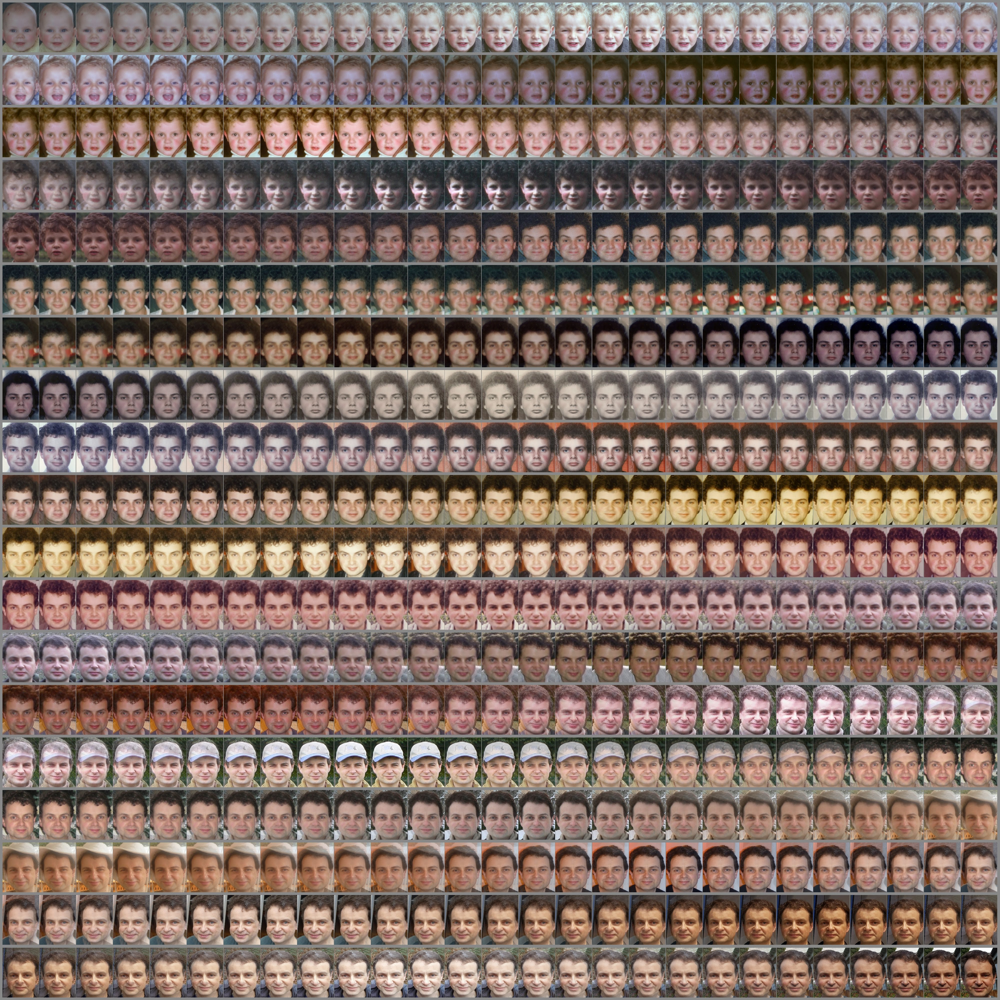
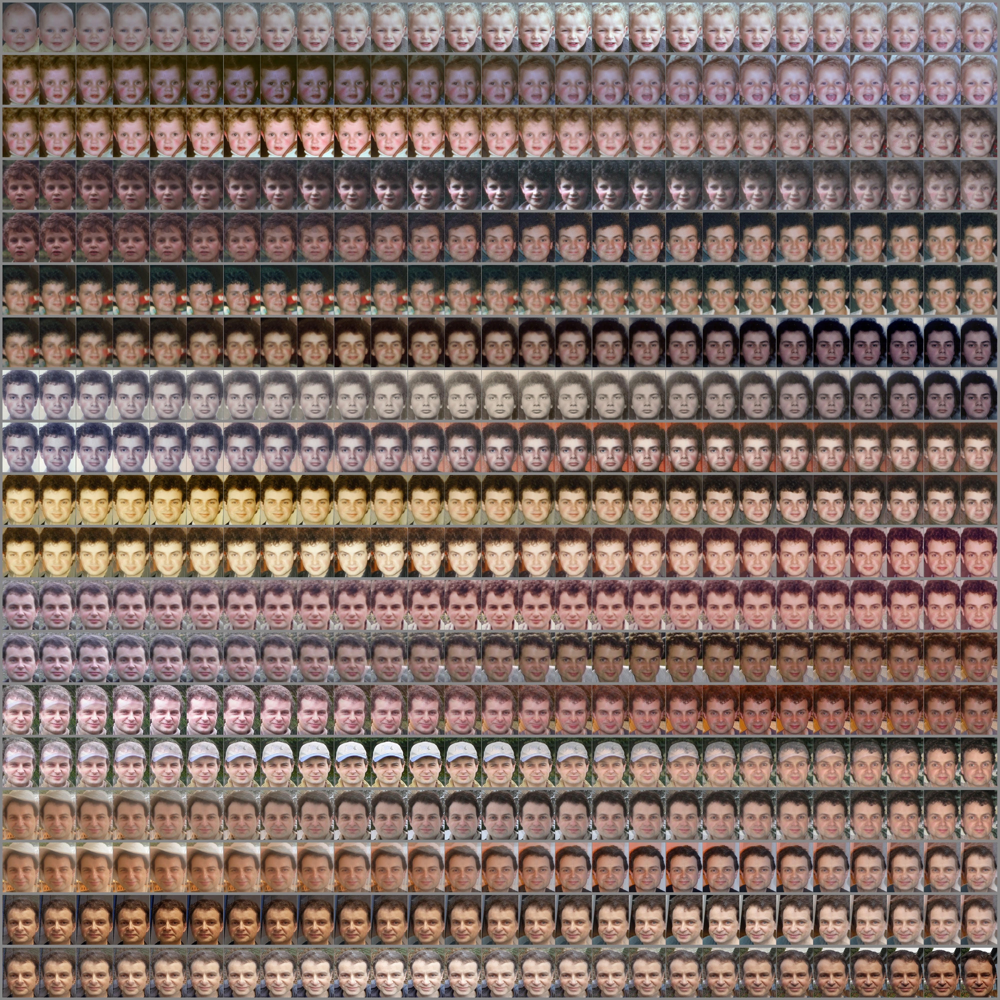
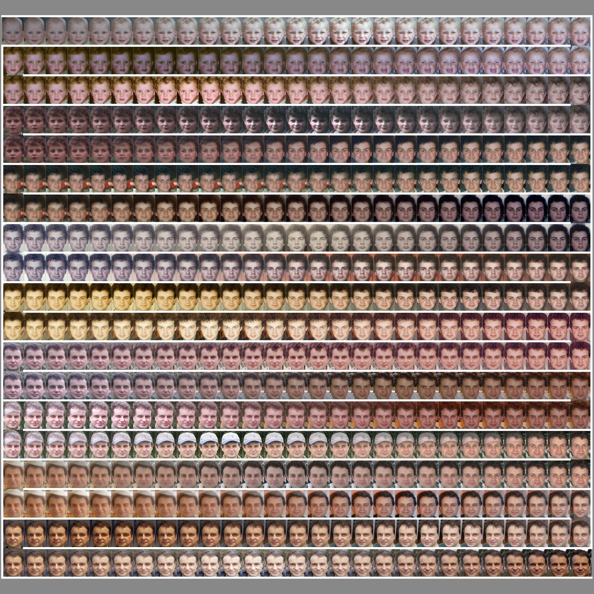
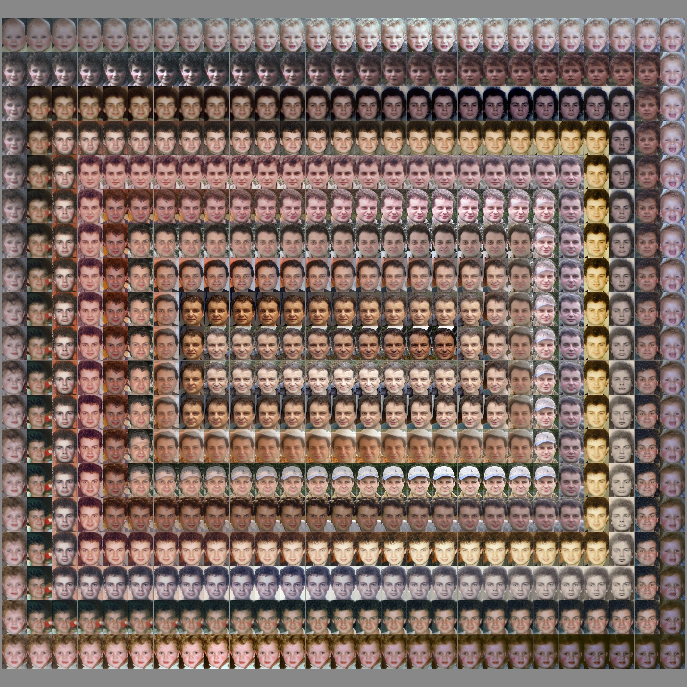
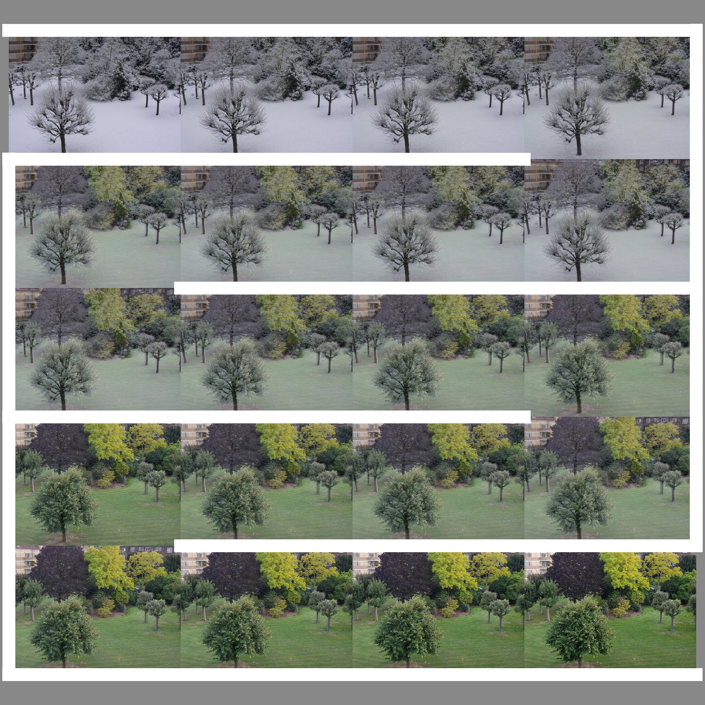

Posters
As well as producing a video from a Zoetic project, it is possible to produce an image, a poster, from the frames of the video. Various settings can be applied to produce the desired effect.
- The number of frames, can range from a handful to several hundred. (The standard version of Zoetic has a limit of 20 frames.)
- The arrangement of the frames can be chosen from:
- a regular left to right, left to right, etc;
- a snake like left to right, right to left, etc;
- or a spiral.
- The size of the poster can be up to a theoretical 9999x9999 pixels but the actual limit will depend on the device running Zoetic.
- The poster's background colour is the Zoetic's Settings value: Image background colour.
- A 'flow outline' can be optionally added to snake and spiral posters. These are lines that help to visualize the flow of images. The flow outline can only be applied to posters which don't add space around the images, i.e. the Image distribution setting has a value of None.
Here are some example posters produced from the Ageing project with the number of frames set to 500. You may notice that there are actually 513 frames (27x19). Zoetic calculates a number that is as close to the user specified number as possible whilst producing the best fit to the dimensions of the poster.
Arrangement - left to right:

Arrangement - snake (left to right; right to left; left to right etc):

Arrangement - snake; with the addition of white lines to emphasise the flow of images:

Arrangement - spiral:

Arrangement - spiral; with the addition of a white line to emphasise the flow of images:
Here are a couple more examples of posters created from projects consisting of only two images. The change between frames is obviously a lot more subtle in these examples.
Arrangement - spiral; with the addition of a white line to emphasise the flow of images:

Arrangement - snake; with the addition of white lines to emphasise the flow of images:
